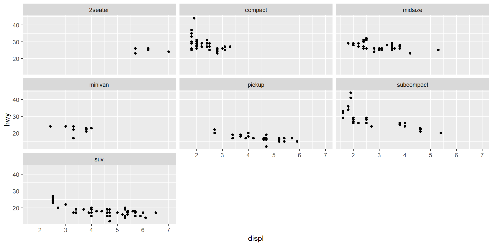
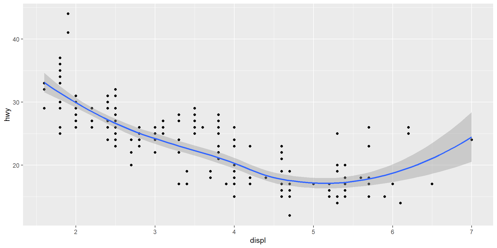
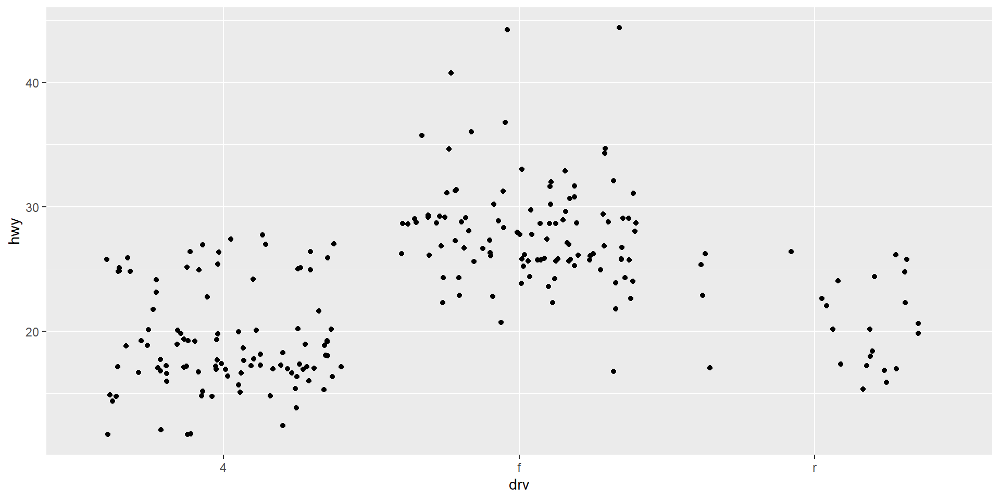

name height mass hair_color skin_color eye_color birth_year
0.00 0.07 0.32 0.06 0.00 0.00 0.51
sex gender homeworld species films vehicles starships
0.05 0.05 0.11 0.05 0.00 0.00 0.00 DSC 3091- Advanced Statistics Applications I
Handling Missing Values and Data Visualization
Prof. P. Wijekoon
Department of Statistics and Computer Science
Handling missing values
After importing data, we have to clean them before visualizing or analysing them. A part of data cleaning we have discussed in the previous lectures.
When cleaning data, identification of the missing values is also important. To do this, first find the proportion of missing values in each variable.
Consider the starwars data set in the dplyr package, and obtain the proportion of missing values in each variable.
Note that 51% of the birth_year values are missing. If this variable is not important for the data analysis, you can drop this variable.
To visualize the missing values, use the function md.pattern() in mice package as below:
name skin_color eye_color films vehicles starships sex gender species
29 1 1 1 1 1 1 1 1 1
21 1 1 1 1 1 1 1 1 1
6 1 1 1 1 1 1 1 1 1
13 1 1 1 1 1 1 1 1 1
3 1 1 1 1 1 1 1 1 1
1 1 1 1 1 1 1 1 1 1
5 1 1 1 1 1 1 1 1 1
4 1 1 1 1 1 1 1 1 1
1 1 1 1 1 1 1 1 1 1
1 1 1 1 1 1 1 0 0 0
1 1 1 1 1 1 1 0 0 0
1 1 1 1 1 1 1 0 0 0
1 1 1 1 1 1 1 0 0 0
0 0 0 0 0 0 4 4 4
hair_color height homeworld mass birth_year
29 1 1 1 1 1 0
21 1 1 1 1 0 1
6 1 1 1 0 1 1
13 1 1 1 0 0 2
3 1 1 0 1 1 1
1 1 1 0 0 0 3
5 1 0 0 0 0 4
4 0 1 1 1 1 1
1 0 1 1 1 0 2
1 1 1 1 1 0 4
1 1 1 1 0 1 4
1 1 1 1 0 0 5
1 1 0 0 0 0 7
5 6 10 28 44 105The missing values in a data set can be handled in two ways.
(i) Listwise deletion : Delete all observations which contain missing values.
First, we remove birth_year variable, since it contains 51% of the missing values, and then delete observations in the other variables which contain missing values.
(ii) Imputation : Replace missing values with suitable values. Refer R packages as VIM, mice, Amelia, Hmisc, mi and missForest for possible options. A details tutorial of using these packages are given here.
In the following example, we use VIM package which impute missing values using the 5 nearest neighbors. Since, films, vehicles and starships are lists, we remove those variables from the data set before impute values.
newstar2 <- starwars %>%
select(-films, -vehicles, -starships)
library(VIM)
newstar2 <- kNN(newstar2, k=5)
propmiss <- colSums(is.na(newstar2))/nrow(newstar2)
round(propmiss, 2) name height mass hair_color skin_color
0 0 0 0 0
eye_color birth_year sex gender homeworld
0 0 0 0 0
species name_imp height_imp mass_imp hair_color_imp
0 0 0 0 0
skin_color_imp eye_color_imp birth_year_imp sex_imp gender_imp
0 0 0 0 0
homeworld_imp species_imp
0 0 Class works 1
Use the airquality data set in the datasets package to do the following:
(i) Identify the variables in this data set, and get summary statistics using summary() function. What are the variables having missing values?
(ii) Find the proportion of missing values in each variable.
(iii) Use the md.pattern() function in mice package to visualize missing values.
(iv) Use knn() function in VIM package to impute the missing values, and visualize the data again using md.pattern()function.
Data Visualization using ggplot2
The R package ggplot2 produces publication quality graphics which has an underlying grammar that allows you to create graphs by combining independent components.
The graphics of ggplot2 start with a layer that shows the raw data. Then, you can add the other layers which are the collection of geometric elements and statistical transformations.
Geometric elements are identified as geoms, which usually represent points, lines, polygons, etc in the plot.
Statistical transformations are given as stats which summarise the data.
The coordinate system of the graph is represented by coord, which also provides axes and gridlines of the graph.
The term facet is used to break up and display subsets of data.
For the graph, a theme also can be used with specific font size and background colour etc.
To understand the concepts of ggplot2, we use the mpg data set in ggplot2 package. This data set includes the fuel economy of popular car models in 1999 and 2008, collected by the US Environmental Protection Agency.
Check the variables of the data set, and find whether there are any missing values.
Any ggplot2 plot has data, a set of aesthetic mappings and at least one layer with a geom function.
Suppose we want to draw a scatter plot for engine size (displ) vs. fuel economy (hwy).
Here, we call data first, and then aesthetic mappings are given in ggplot() function. Then, geom layer is added using + sign. Refer the other geom elements here: https://ggplot2.tidyverse.org/reference/index.html.
To add more variables to the plot, we can use colour, size, and shape as other aesthetics.

Change the previous plot using shape = drv or size = cyl as aesthetics.
Don’t add many aesthetics to the same plot. Instead, draw simple plots to understand the relationships.
The aesthetics colour and shape work well with categorical variables, and the aesthetics size works well for continuous variables.
Also, if you have a large data set or you need to compare distributions separately for different categories, use faceting.
Class works 2
Use the iris data set in the datasets package to do the following:
(i) Identify the variables in this data set.
(ii) Draw a scatter plot for Sepal.Length vs. Sepal.Width using ggplot2.
(iii) Add Species variable to both color and shape.
To display additional categorical variable on a plot, we can use faceting. This is useful when having a large number of observations.
Faceting creates a set of graphics by splitting the data into subsets and displaying them in the same graph.
There are two types of faceting: (i) grid faceting and (ii) wrapped faceting.
Other geom() functions
| Function | Description |
|---|---|
geom_smooth |
Add a smooth curve to the scatter plot with its standard error. |
geom_boxplot() |
Draw a box and whisker plot. |
geom_histogram() and geom_freqpoly() |
Draw a histogram and a frequency polygon. |
geom_bar() |
Draw Bar Charts for categorical variables. |
geom_path() and geom_line() |
Draw path and line plots to connect data points. |
Adding a smooth curve with confidence interval
Here, the final layer is the smooth curve with confidence interval. If you want to hide the confidence interval, use
geom_smooth(se = FALSE).The default method of the smooth curve fitting is
method = "loess", which uses a smooth local polynomial regression, when n <= 1000.For large n (n > 1000), an alternative smoothing algorithm is used.
method = "lm" fits a linear model,
method = "rlm" fits a robust fitting of linear models in which the outliers does not affect the fit. Load MASS package if you use this method.
Refer the other options of geom_smooth(): https://ggplot2.tidyverse.org/reference/geom_smooth.html
To compare the distribution of continuous variable among categories of a categorical variable, draw jittered plots, box-and-whisker plots and violin plots .
Jittered plots show all observations, and hence it is good for a relatively small datasets.
To show the distribution of a single variable, draw a histogram or frequency polygon.
The default number of bins is 30 in the geom_histogram() function. You can change this by setting the width of the bins with the binwidth argument.
Class work 3
(i) Draw a frequency polygon using geom_freqpoly() function.
(ii) Set the binwidth to 1, and redraw it .
(iii) Draw frequency polygons of displ variable for the categories of drv variable in one graph by setting colour=drv argument. Set the binwidth=0.5.
(iv) Use faceting to draw histograms of displ variable for the categories of drv variable in one graph by setting fill=drv argument. Set the binwidth=0.5, and show all histograms in one column.
Themes
Themes is used to control over the non-data elements like fonts, ticks, panel strips, and backgrounds of your plot.
theme_gray : gray background color and white grid lines
theme_bw : white background and gray grid lines
theme_linedraw : black lines around the plot
theme_light : light gray lines and axis
theme_minimal: no background annotations
theme_classic : theme with axis lines and no grid lines
theme_void: Empty theme
theme_dark(): dark background designed to make colours pop out
Consider the following two plots
Use the other background themes and see the difference.
In the mpg data set, the variable drv represents the drive type ( f=front wheel, r=rear wheel, 4=4 wheel) of vehicles. We can draw histograms of hwy variable separately for the drive type in the same graph as below:
You can change the position argument in a plot to use for overlapping points on the layer. The default value is “stack”.Other possible values for the argument position are “identity”and “dodge”.
The default legend position is right in ggplot. Some of the options to change the legend position are given below:
theme(legend.position="top") theme(legend.position="bottom") theme(legend.position="none") theme(legend.position = c(0.8, 0.2))
Change the legend position of the previous plot using the above codes.
To change the legend title, text font style, and the background colour of the legend box, use the following codes:
p<-mpg %>%
ggplot(aes(x=hwy, fill=drv, color=drv)) +
geom_histogram(alpha=0.5, position="identity", binwidth = 1)+
theme_classic()
p1<-p+theme(legend.title = element_text(colour="blue", size=10, face="bold"))
p2<-p1+theme(legend.text = element_text(colour="blue", size=10, face="bold"))
p2+theme(legend.background = element_rect(fill="lightgray",size=0.5, linetype="solid", colour ="darkblue"))Saving your plot
Save your plot by assigning it to a plot object as below:
To see the data sets in a loaded R package, go to
Environment tab —-> Global Environment
Then, select the specific package. Now, you can see the list of data sets in that package.
OR else use the datasets function in the vcdExtra package as below:
Item class dim
1 diamonds data.frame 53940x10
2 economics data.frame 574x6
3 economics_long data.frame 2870x4
4 faithfuld data.frame 5625x3
5 luv_colours data.frame 657x4
6 midwest data.frame 437x28
7 mpg data.frame 234x11
8 msleep data.frame 83x11
9 presidential data.frame 11x4
10 seals data.frame 1155x4
11 txhousing data.frame 8602x9
Title
1 Prices of over 50,000 round cut diamonds
2 US economic time series
3 US economic time series
4 2d density estimate of Old Faithful data
5 'colors()' in Luv space
6 Midwest demographics
7 Fuel economy data from 1999 to 2008 for 38 popular models of cars
8 An updated and expanded version of the mammals sleep dataset
9 Terms of 11 presidents from Eisenhower to Obama
10 Vector field of seal movements
11 Housing sales in TXClass work 4
(i) Load the iris data set, and use facet_wrap() to draw separate scatter plots of Petal.Length vs. Petal.Width for species. Add a smooth curve and a confidence interval to each scatter plot using the method = "rlm". Add a suitable background theme for the plot.
(ii) Draw a jittered plot to show the distribution of Petal.Length for each species. Use colour and shape arguments to separate each species. Add the classic background theme for the plot.
(iii) Repeat (ii) to draw box plots. Add a dark background theme for the plot.
(iv) Draw histograms of the variable Sepal.Length for species in the same graph. Set binwidth to 0.8, legend at the bottom, and add a background colour of the legend box
(v) Use scale_fill_discrete(labels=c( )) to change the labels of the legend in all the above plots.
More Details
miceR package: https://datascienceplus.com/imputing-missing-data-with-r-mice-package/ggplot2 by Hadley Wickham, Danielle Navarro, and Thomas Lin Pedersen: https://ggplot2-book.org/index.html
Graphic Design with ggplot2, rstudio::conf(2022) Workshop by C�dric Scherer: https://rstudio-conf-2022.github.io/ggplot2-graphic-design/
ggplot themes and background colour: http://www.sthda.com/english/wiki/ggplot2-themes-and-background-colors-the-3-elements
ggplot2 legends: http://www.sthda.com/english/wiki/ggplot2-legend-easy-steps-to-change-the-position-and-the-appearance-of-a-graph-legend-in-r-software
ggplot legend title, position and labels: https://www.datanovia.com/en/blog/ggplot-legend-title-position-and-labels/
Data Visualization with ggplot2: https://www.publichealth.columbia.edu/sites/default/files/media/fdawg_ggplot2.html
ggplot2 - Essentials: http://www.sthda.com/english/wiki/ggplot2-essentials
Colortool: http://www.sthda.com/english/wiki/the-elements-of-choosing-colors-for-great-data-visualization-in-r
Gramme of Graphics: https://pkg.garrickadenbuie.com/gentle-ggplot2/#1
Dealing with missing values: https://medium.com/coinmonks/dealing-with-missing-data-using-r-3ae428da2d17